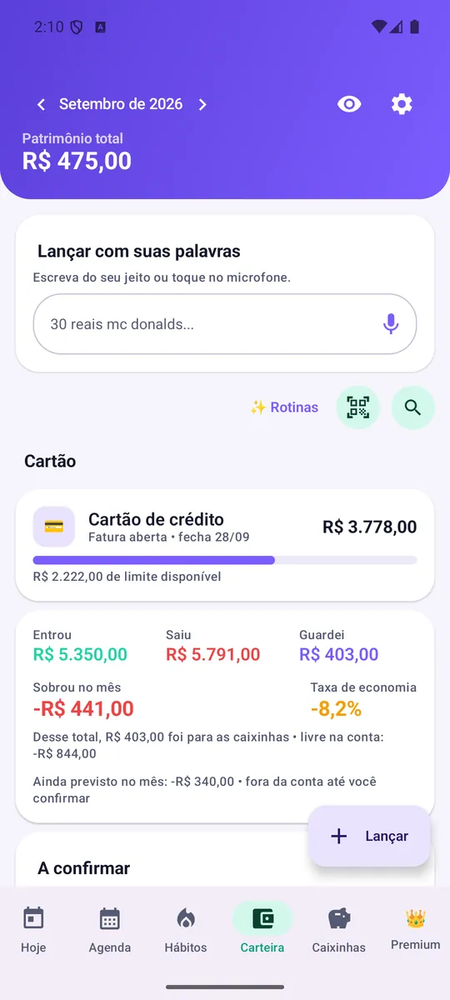
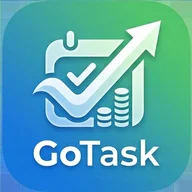

Freelas de serviços
Digitação, planilhas, atendimento, tradução, redação, suporte administrativo para pequenos negócios.
Dá para fazer de casa e no seu horário.
Concorrência grande; os primeiros clientes demoram.
Início › Renda extra
Nenhuma destas ideias é dinheiro fácil e nenhuma tem ganho garantido: o resultado depende da sua região, do seu tempo, da sua habilidade e da procura. O que elas têm em comum é que são trabalho de verdade, que muita gente já faz.
Bico é alívio, não patamar: para mudar de vez a sua renda, veja também onde está o dinheiro nas carreiras.
Habilidade que você já tem reduz custo e tempo de aprendizado.
Ofereça para 2 ou 3 pessoas próximas antes de investir em material.
Desconte transporte, material, taxas e tempo. Faturamento não é lucro.
14 ideias exibidas
Digitação, planilhas, atendimento, tradução, redação, suporte administrativo para pequenos negócios.
De bicicleta, moto ou carro, para aplicativos ou comércios do bairro.
Roupas, cosméticos, acessórios, produtos de época ou itens usados em bom estado.
Reforço escolar, idiomas, música, informática básica, preparação para provas.
Pequenos reparos, montagem de móveis, pintura, elétrica e hidráulica simples, conserto de eletrônicos.
Passeio com cães, visita para alimentar gatos, hospedagem e banho simples.
Artes para redes sociais de comércios locais, edição de vídeo, cardápios, currículos.
Limpeza residencial, pós-obra, organização de armários e passadoria.
Marmitas, bolos, salgados, doces e congelados por encomenda.
Aniversários, ensaios simples, fotos de produtos para lojas e cardápios.
Acompanhar idosos em consultas, fazer companhia, ajudar em tarefas do dia.
Barras, ajustes, consertos de roupa e peças sob encomenda.
Roupas, eletrônicos, móveis e objetos parados em casa.
Manicure, sobrancelha, cortes simples, maquiagem para eventos.
Nenhuma ideia com esse filtro. Tente outro.
Quem mistura o dinheiro do bico com o do mês nunca sabe se está ganhando de verdade.


Renda extra só muda a vida quando tem destino. Use o GoTask para separar o lucro do bico em caixinhas e acompanhar as metas.
Grátis com anúncios · Android · Sem cadastro